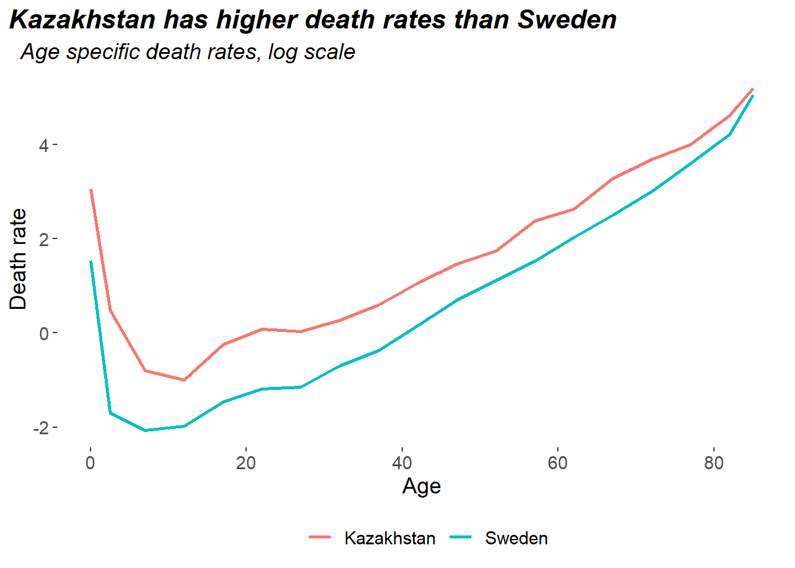

Which country do you think has a higher death rate - Kazakhstan or Sweden?
Kazakhstan seems like a reasonable guess, death rates in Kazakhstan are higher than Sweden for all ages:
Here’s the data for the chart if you want to recreate it. If we calculate the crude death rate (total deaths / total population) it turns out that Sweden has the higher death rate, which feels slightly weird:
df %>%
group_by(country) %>%
summarise(cdr = 1e3 * sum(deaths) / sum(pop))| country | cdr |
|---|---|
| Kazakhstan | 7.42 |
| Sweden | 10.55 |
The reason why this is happening is because Sweden is much older than Kazakhstan. Old people tend to die more than young people, so a higher proportion of Sweden’s population die compared to Kazakhstan, which causes the higher rate. We can’t compare the crude death rates of the two countries because their populations are so different. We need a way to control for these differences. There’s two common techniques to do this in public health - direct standardisation and indirect standardisation.
Direct standardisation
The big idea behind standardisation is that every rate is a sum. Imagine you have data on the number of deaths & total population by ageband, you can make age-specific rates by dividing the number of deaths by the population in each age band. Then you could write the crude death rate as
\[ CDR = \frac{\sum_{a}pop_{a} rate_{a}}{\sum_{a}pop_{a}} = \sum_{a}c_{a} rate_{a} \]
Where \(c\) is the proportion of the population in each age group, which is usually called the population composition.
So the overall rate is made up of 2 things - the composition of the country, and the age-specific death rates of the country. If we replace the country composition with some other reference composition in the formula, we get directly standardised rates.
If you don’t have a reference composition to hand, a good choice is to take the average composition of the countries you’re comparing. So let’s make that:
df = df %>%
group_by(country) %>%
mutate(composition = pop / sum(pop))
ref_comp = df %>%
group_by(ageg) %>%
summarise(composition = mean(composition))Now just multiply these by the age-specific rates of each country and sum to get the DSRs:
rates = df %>%
select(country, ageg, rate)
ref_comp %>%
left_join(rates) %>%
group_by(country) %>%
summarise(dsr = sum(composition * rate))| country | dsr |
|---|---|
| Kazakhstan | 11.88 |
| Sweden | 7.37 |
Kazakhstan has a higher death rate than Sweden, once you control for the age structure of the population. This feels a lot more reasonable, and lines up with what we saw in the chart at the start.
Indirect standardisation
Sometimes you don’t have the composition & age-specific rates for each country, so you can’t do direct standardisation. If you’re only missing the age-specific rates (so you know the population & number of deaths, so you can calculate a CDR) you can do indirect standardisation.
The idea behind indirect standardisation is to use the country which you have all the information for as your reference area. By applying the reference country’s age-specific rates to the other country’s composition, you can estimate how many deaths you would expect in the other country assuming the country experienced the same death rates as the reference country. Comparing the actual & estimated CDRs gives you the standardised mortality ratio, which you then multiply the reference country’s CDR by to get the indirectly standardised rate.
If you’re into formulas the steps are:
- estimate the crude death rate for country you don’t have all the info on, by using the country’s composition & the reference areas rates:
\[CDR_{est} = \sum_ac_a^{area}rate_a^{ref}\]
- Compare this to the actual CDR to get the standardised mortality ratio:
\[SMR = \frac{CDR_{actual}}{CDR_{est}}\]
- Use the SMR to scale up the CDR for the reference area:
\[ISR = CDR^{ref} \times SMR\]
Imagine we didn’t have the age-specific rates for Kazakhstan, we can use Sweden as our reference area and compute the ISR. First we need to get the estimated crude death rate by applying Sweden’s rates to Kazakhstan’s composition:
ref_area = df %>%
filter(country == 'Sweden') %>%
select(country, ageg, rate)
kaz = df %>%
filter(country == 'Kazakhstan') %>%
select(country, ageg, composition)
cdr_est = ref_area %>%
left_join(kaz, by = 'ageg') %>%
summarise(cdr = sum(composition * rate))Next compare the estimated CDR to the actual Kazakhstan CDR we computed at the start:
smr = 7.42 / cdr_est$cdrFinally use this to scale up the Sweden CDR we computed at the start:
isr_kaz = 10.55 * smrThis gives an indirectly standardised rate of 18.64 for Kazakhstan, which is fairly close to the directly standardised rate of 16.34 (just multiply Sweden’s composition by Kazakhstan’s rates).
Summary
- Direct standardisation applies group rates from different areas to a reference composition. This lets you compare rates between areas with significantly different population structures
- Direct standardisation needs the population & number of events for each group, in all the areas you want to compare
- If you’re missing the number of events in the groups for one area, you can do indirect standardisation
- Indirect standardisation applies the rates of one area to the composition of another, to estimate a rough crude death rate. From that you can compute the standardised mortality ratio. Multiplying the reference areas crude death rate by the SMR gives an indirectly standardised rate for the other area. The ISR is usually close enough to the DSR to be a good estimate